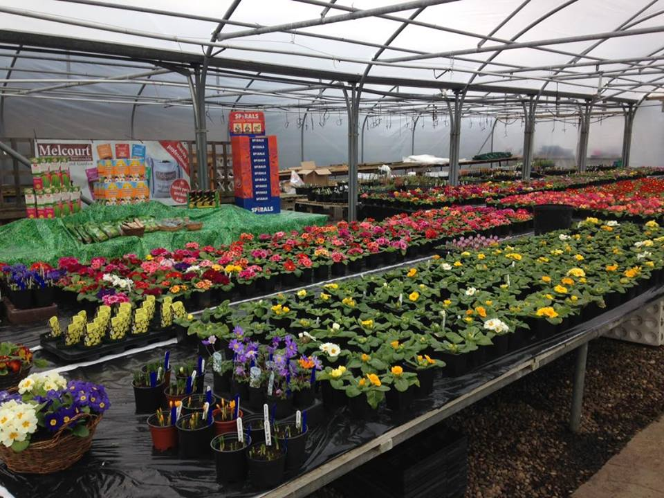
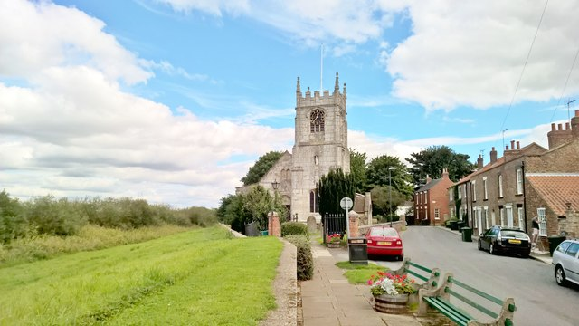

<!-- Main -->
	<div id="main" class="wrapper orangepurple">
		<div class="container">
			<div class="row">

				<!-- Sidebar -->
				<div id="sidebar" class="4u sidebar">
					<section>
						<!-- <header class="major">
							<h2>Our Cawoodstock Venues</h2>
						</header> -->
						<ul class="default">
							<li><a href="#castle">The Castle Inn</a></li>
							<li><a href="#jolly">The Jolly Sailor</a></li>
							<li><a href="#ferry">The Ferry Inn</a></li>
							<li><a href="#skiclub">White Cross Waterski Club</a></li>
							<li><a href="#grangeside">Grangeside Nurseries</a></li>
							<li><a href="#caravan">Cawood Park Caravan Site</a></li>
							<li><a href="#postie">The Pickled Postie</a></li>
							<li><a href="#allsaints">All Saints Church</a></li>
						</ul>
					</section>
				</div>

				<!-- Content -->
				<div id="content" class="8u skel-cell-important">
					<section>
						<header class="major">
							<h2>{{ page.title }}</h2>
							<span class="byline">Participating festival venues</span>
						</header>
            <ul class="default">
              <li>
                <h3><a name="castle">The Castle Inn</a></h3>
                <a href="https://www.facebook.com/CastleInnPub">
                  
                </a>
                <p><i class="fas fa-map-marker-alt"></i> 7 Wistowgate, Cawood, Selby YO8 3SH</p>
              </li>
              <li>
                <h3><a name="jolly">The Jolly Sailor</a></h3>
                <a href="https://www.facebook.com/jolly.cawood">
                  
                </a>
                <p>The Jolly Sailor is Cawood's regular music venue pub, with regular music acts every Friday and Saturday, a monthly acoustic jam session, and Cawood bands The Sicknotes and  Chris and Sarah. Contact Kathy Reece-King <a href="https://www.facebook.com/kathyreeceking">via Facebook</a></p>
                <p><i class="fas fa-map-marker-alt"></i> 5 Market Place, Cawood YO8 3SR</p>
              </li>
              <li>
                <h3><a name="ferry">The Ferry Inn</a></h3>
                <a href="https://www.facebook.com/TheFerryInnAllNew/">
                  
                </a>
                <p>The Ferry Inn is an historic 16th century inn, serving 5 real ales and fine pub cuisine in a traditional pub atmosphere.</p>
                <p><i class="fas fa-map-marker-alt"></i> 2 King St, Cawood, Selby YO8 3TL</p>
              </li>
              <li>
                <h3><a name="skiclub">White Cross Waterski Club</a></h3>
                <a href="https://www.facebook.com/Whitecrossskiclub/">
                  
                </a>
                <p>The White Cross Ski Club is a water ski and wakeboard club, first opened in 1961, and with a brand new purpose built member bar and recreation facility. The Ski Club is holding a Family Fun Day over the Cawoodstock weekend, with music, food, boat rides on the river Ouse, and lots more. Information on staring water ski and wakeboarding, and Club membership, can be obtained from any existing member or by contacting the Club via their <a href="https://www.facebook.com/Whitecrossskiclub/">Facebook page</a>.</p>
                <p><i class="fas fa-map-marker-alt"></i> Rythergate, Cawood, Selby YO8 3TP</p>
              </li>
              <li>
                <h3><a name="grangeside">Grangeside Nurseries</a></h3>
                <a href="https://www.facebook.com/Grangeside-Nurseries-218832071806414/">
                  
                </a>
                <p><i class="fas fa-map-marker-alt"></i> Thorpe Lane, Cawood, YO8 3SG</p>
              </li>
              <li>
                <h3><a name="postie">The Pickled Postie</a></h3>
                <a href="https://www.facebook.com/Thepickledpostie/">
                  
                </a>
                <p><i class="fas fa-map-marker-alt"></i> 2 High St, Cawood, Selby YO8 3TH</p>
              </li>
              <li>
                <h3><a name="caravan">Cawood Park Caravan Site</a></h3>
                <a href="https://www.facebook.com/CawoodPark/">
                  
                </a>
                <p><i class="fas fa-map-marker-alt"></i> Ryther Rd, Cawood, York YO8 3TT</p>
              </li>
              <li>
                <h3><a name="allsaints">All Saints Church Cawood</a></h3>
                <a href="http://www.allsaintscawood.org.uk/">
                  
                </a>
                <p><i class="fas fa-map-marker-alt"></i> Church End, Cawood, Selby YO8 3SN</p>
              </li>
              <li>
                <h3><a name="obs">The Old Boys' School</a></h3>
                <a href="https://www.facebook.com/Cawood-Old-Boys-School-192183871361101/">
                  
                </a>
                <p><i class="fas fa-map-marker-alt"></i> Old Boys School Lane, off Rythergate, YO8 3TY</p>
              </li>
            </ul>
					</section>
				</div>

			</div>
		</div>
	</div>
